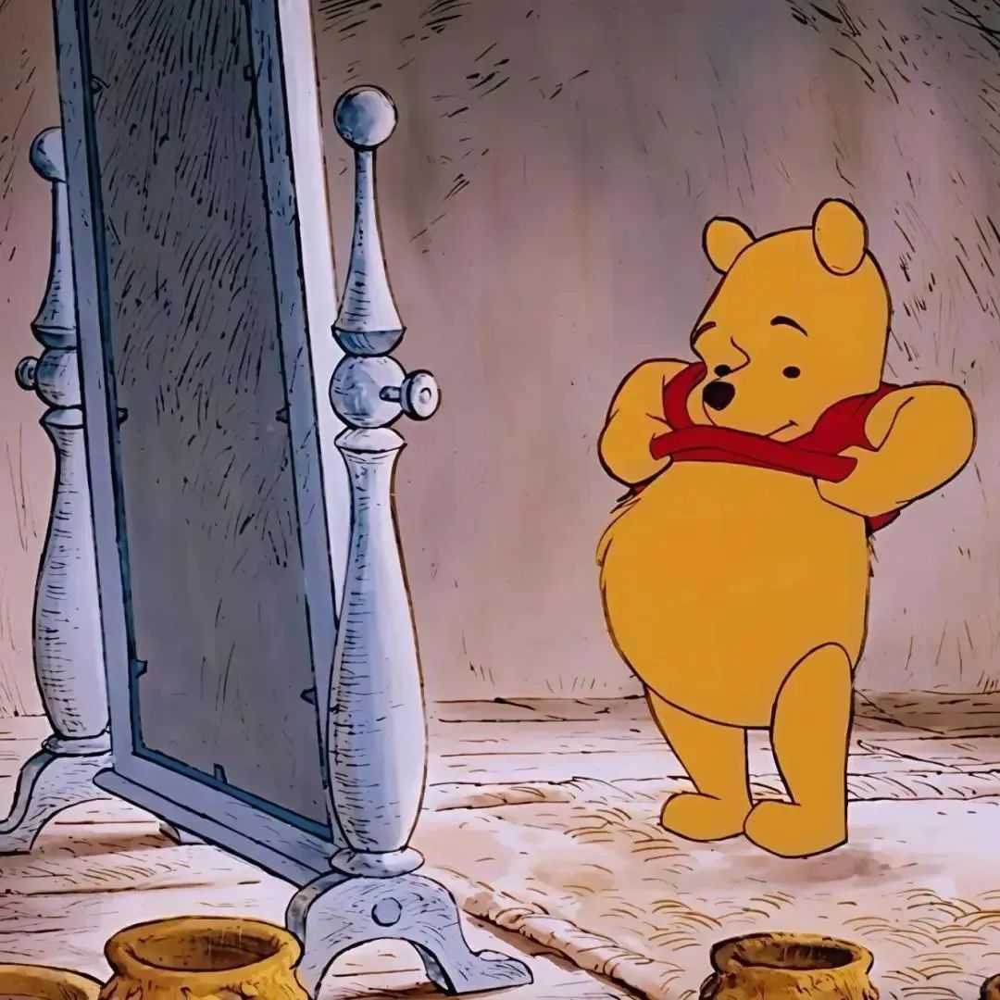

Персонажи:
- Винни-Пух
- Ослик Иа
- Сова
- Кролик
Винни-Пух

Винни-Пух (англ. Winnie-the-Pooh) — плюшевый мишка, персонаж повестей и стихов Алана Александра Милна (цикл не имеет общего названия и обычно тоже называется "Винни-Пух", по первой книге). Один из самых известных героев детской литературы XX века.
В 1960-е—1970-е годы, благодаря пересказу Бориса Заходера «Винни-Пух и все-все-все», а затем и фильмам студии «Союзмультфильм», где мишку озвучивал Евгений Леонов, Винни-Пух стал очень популярен и в Советском Союзе.